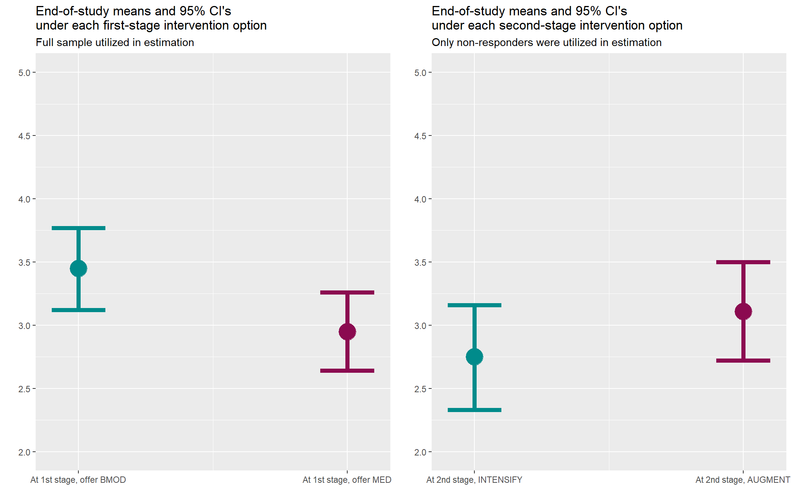

estimate <- function(fit, combos) {
# -- Details about function inputs
# fit:
# must be of class 'geem' (obtained from geeM package)
# combos:
# must be of class 'matrix'
# specifies linear combinations of parameter estimates
# -- Compute the mean estimate
est <- combos %*% as.matrix(fit$beta)
# -- Get the appropriate variance estimate
var <- fit$var
# -- Compute standard error of mean estimate and confidence bounds
se.est <- sqrt(diag(combos %*% var %*% t(combos)))
lcl <- est - se.est * qnorm(0.975)
ucl <- est + se.est * qnorm(0.975)
# -- Perform a 1-degree-of-freedom Wald test on the estimate
pvalue <- 1 - pchisq((est/se.est)^2, df = 1)
# -- Combine and format output
out <- cbind(est, lcl, ucl, se.est, pvalue)
rownames(out) <- rownames(combos)
colnames(out) <- c("Estimate", "95% LCL", "95% UCL", "SE", "p-value")
out <- round(out, 2)
# -- Output is a rough equivalent of SAS PROC GENMOD's ESTIMATE statement
return(out)
}Data Analysis / HELPER FUNCTIONS
Data Analysis / DEMO WORKFLOW
Load data and understand relationships between variables in the dataset
# -- Load package for plotting
library(ggplot2)
# -- Load package for data cleaning
library(dplyr)
# -- Load package containing simulated data and documentation
library(CATIE2023)
dat_smart <- CATIE2023::adhdMarginal Model, incorporating an indicator for first-stage intervention options
library(geeM)
# -- Step 1: Estimate parameters of our model
#
# Importantly, we set data = dat_smart
# because we are utilizing the full sample in the estimation.
#
# -- By default, sandwich is set to TRUE.
# So, we do not really need to specify 'sandwich = TRUE' here,
# but we do so anyway to serve as an important reminder that we prefer
# using robust standard errors
model <- geem(Y2 ~ A1, id = ID, data = dat_smart, sandwich = TRUE)
summary(model) Estimates Model SE Robust SE wald p
(Intercept) 3.1970 0.1161 0.1154 27.710 0.0000
A1 0.2486 0.1161 0.1154 2.154 0.0312
Estimated Correlation Parameter: 0
Correlation Structure: independence
Est. Scale Parameter: 2.019
Number of GEE iterations: 2
Number of Clusters: 150 Maximum Cluster Size: 1
Number of observations with nonzero weight: 150 # -- Step 2: Estimate end-of-study outcome means under each
# first-stage intervention and
# the main effect of first-stage intervention
L <- rbind("End-of-study mean: a1 = BMOD" = c(1, 1),
"End-of-study mean: a1 = MED" = c(1, -1),
"Main effect using full sample" = c(0, 2))
est_contrasts <- estimate(model, L)
print(est_contrasts) Estimate 95% LCL 95% UCL SE p-value
End-of-study mean: a1 = BMOD 3.45 3.12 3.77 0.17 0.00
End-of-study mean: a1 = MED 2.95 2.64 3.26 0.16 0.00
Main effect using full sample 0.50 0.04 0.95 0.23 0.03# -- The next line is only necessary because we would like to plot
# estimates from all the analyses side-by-side
est_contrasts1 <- est_contrastsMarginal Model, incorporating an indicator for second-stage intervention options
library(geeM)
# -- Step 1: Create weights
#
# -- Note: Let us use the following notation
# Pr(A2=+1|R=0, A1=+1) = p and Pr(A2=-1|R=0, A1=+1) = 1-p
# Pr(A2=+1|R=0, A1=-1) = q and Pr(A2=-1|R=0, A1=-1) = 1-q
#
# If p = q = 0.5, as in the case of the ADHD SMART, then
# this step is not necessary. We would need to create weights if
# randomization probabilities (either p or q) do not equal 0.5
dat_smart <- dat_smart %>% mutate(design_weights = 2*R + 4*(1-R))
# -- Step 2: Estimate parameters of our model
#
# Importantly, we set data = dat_smart %>% filter(R == 0)
# so that only non-responders are used in the estimation.
#
# -- Again, we note that, by default, sandwich is set to TRUE.
# So, we do not really need to specify 'sandwich = TRUE' here,
# but we do so anyway to serve as an important reminder that we prefer
# using robust standard errors
#
# -- Specifying weights = design_weights when p = q = 0.5 has the
# effect of weighting all non-responders equally, which is equivalent to
# setting weights = NULL (i.e., no weights).
# Here, we leave weights = design_weights here so as to
# show how one might specify the arguments of geem in a way that is
# applicable to a wide variety of scenarios.
model <- geem(Y2 ~ A1,
id = ID,
data = dat_smart %>% filter(R==0),
sandwich = TRUE,
corstr = "independence",
weights = design_weights)
summary(model) Estimates Model SE Robust SE wald p
(Intercept) 2.9280 0.1468 0.1452 20.170 0.0000
A1 0.2103 0.1468 0.1452 1.449 0.1475
Estimated Correlation Parameter: 0
Correlation Structure: independence
Est. Scale Parameter: 7.928
Number of GEE iterations: 2
Number of Clusters: 92 Maximum Cluster Size: 1
Number of observations with nonzero weight: 92 # -- Step 3: Estimate end-of-study outcome means and
# the main effect of second-stage intervention
# among non-responders
L <- rbind("End-of-study mean: a2 = INTENSIFY" = c(1, 1),
"End-of-study mean: a2 = AUGMENT" = c(1, -1),
"Main effect among non-responders only" = c(0, 2))
est_contrasts <- estimate(model, L)
print(est_contrasts) Estimate 95% LCL 95% UCL SE p-value
End-of-study mean: a2 = INTENSIFY 3.14 2.70 3.58 0.22 0.00
End-of-study mean: a2 = AUGMENT 2.72 2.36 3.08 0.18 0.00
Main effect among non-responders only 0.42 -0.15 0.99 0.29 0.15# -- The next line is only necessary because we would like to plot
# estimates from all the analyses side-by-side
est_contrasts2 <- est_contrastsCompare estimates and confidence limits across all models
# -- Note: The following code snippet employs advanced R coding concepts;
# you may focus on the meaning of the output plot, rather than the
# specifics of the code itself, without losing understanding of
# the basic workflow
# -- Convert matrix into data frame because ggplot does not permit matrix inputs
dat_plot1 <- data.frame(est_contrasts1)
# -- We strongly prefer using syntactic names for data frames
colnames(dat_plot1) <- c("estimate", "lower", "upper", "stderr", "pval")
dat_plot1[["contrast_labels"]] <- row.names(dat_plot1)
row.names(dat_plot1) <- NULL
# -- Grab only the rows you will plot
dat_plot1 <- dat_plot1 %>% filter(grepl(pattern = "End-of-study mean:", x = contrast_labels, fixed = TRUE))
# -- Start building a graph
g <- ggplot(data = dat_plot1, mapping = aes(x = factor(contrast_labels), y = estimate))
g <- g + scale_y_continuous(limits = c(2,5), breaks = c(2,2.5,3,3.5,4,4.5,5))
g <- g + scale_x_continuous(breaks = c(1,2), labels = c("At 1st stage, offer BMOD", "At 1st stage, offer MED"))
g <- g + labs(x = "", y = "")
g <- g + labs(title = "End-of-study means and 95% CI's\nunder each first-stage intervention option", subtitle = "Full sample utilized in estimation")
g <- g + annotate("pointrange", x = 1, y = dat_plot1[["estimate"]][1], ymin = dat_plot1[["lower"]][1], ymax = dat_plot1[["upper"]][1], colour = "cyan4", linewidth = 2, linetype = 1)
g <- g + annotate("pointrange", x = 2, y = dat_plot1[["estimate"]][2], ymin = dat_plot1[["lower"]][2], ymax = dat_plot1[["upper"]][2], colour = "deeppink4", linewidth = 2, linetype = 1)
g <- g + annotate("segment", x = 0.9, xend = 1.1, y = dat_plot1[["upper"]][1], yend = dat_plot1[["upper"]][1], colour = "cyan4", linewidth = 2, linetype = 1)
g <- g + annotate("segment", x = 1.9, xend = 2.1, y = dat_plot1[["upper"]][2], yend = dat_plot1[["upper"]][2], colour = "deeppink4", linewidth = 2, linetype = 1)
g <- g + annotate("segment", x = 0.9, xend = 1.1, y = dat_plot1[["lower"]][1], yend = dat_plot1[["lower"]][1], colour = "cyan4", linewidth = 2, linetype = 1)
g <- g + annotate("segment", x = 1.9, xend = 2.1, y = dat_plot1[["lower"]][2], yend = dat_plot1[["lower"]][2], colour = "deeppink4", linewidth = 2, linetype = 1)
g <- g + annotate("point", x = c(1,2), y = dat_plot1[["estimate"]], size = 8, colour = c("cyan4","deeppink4"))
# -- This line is only needed because we would like to display two plots side-by-side
g1 <- g# -- Note: The following code snippet employs advanced R coding concepts;
# you may focus on the meaning of the output plot, rather than the
# specifics of the code itself, without losing understanding of
# the basic workflow
# -- Convert matrix into data frame because ggplot does not permit matrix inputs
dat_plot2 <- data.frame(est_contrasts2)
# -- We strongly prefer using syntactic names for data frames
colnames(dat_plot2) <- c("estimate", "lower", "upper", "stderr", "pval")
dat_plot2[["contrast_labels"]] <- row.names(dat_plot2)
row.names(dat_plot2) <- NULL
# -- Grab only the rows you will plot
dat_plot2 <- dat_plot2 %>% filter(grepl(pattern = "End-of-study mean:", x = contrast_labels, fixed = TRUE))
# -- Start building a graph
g <- ggplot(data = dat_plot2, mapping = aes(x = factor(contrast_labels), y = estimate))
g <- g + scale_y_continuous(limits = c(2,5), breaks = c(2,2.5,3,3.5,4,4.5,5))
g <- g + scale_x_continuous(breaks = c(1,2), labels = c("At 2nd stage, INTENSIFY", "At 2nd stage, AUGMENT"))
g <- g + labs(x = "", y = "")
g <- g + labs(title = "End-of-study means and 95% CI's\nunder each second-stage intervention option", subtitle = "Only non-responders were utilized in estimation")
g <- g + annotate("pointrange", x = 1, y = dat_plot2[["estimate"]][1], ymin = dat_plot2[["lower"]][1], ymax = dat_plot2[["upper"]][1], colour = "cyan4", linewidth = 2, linetype = 1)
g <- g + annotate("pointrange", x = 2, y = dat_plot2[["estimate"]][2], ymin = dat_plot2[["lower"]][2], ymax = dat_plot2[["upper"]][2], colour = "deeppink4", linewidth = 2, linetype = 1)
g <- g + annotate("segment", x = 0.9, xend = 1.1, y = dat_plot2[["upper"]][1], yend = dat_plot2[["upper"]][1], colour = "cyan4", linewidth = 2, linetype = 1)
g <- g + annotate("segment", x = 1.9, xend = 2.1, y = dat_plot2[["upper"]][2], yend = dat_plot2[["upper"]][2], colour = "deeppink4", linewidth = 2, linetype = 1)
g <- g + annotate("segment", x = 0.9, xend = 1.1, y = dat_plot2[["lower"]][1], yend = dat_plot2[["lower"]][1], colour = "cyan4", linewidth = 2, linetype = 1)
g <- g + annotate("segment", x = 1.9, xend = 2.1, y = dat_plot2[["lower"]][2], yend = dat_plot2[["lower"]][2], colour = "deeppink4", linewidth = 2, linetype = 1)
g <- g + annotate("point", x = c(1,2), y = dat_plot2[["estimate"]], size = 8, colour = c("cyan4","deeppink4"))
# -- This line is only needed because we would like to display two plots side-by-side
g2 <- g# -- Note: The following code snippet employs advanced R coding concepts;
# you may focus on the meaning of the output plot, rather than the
# specifics of the code itself, without losing understanding of
# the basic workflow
library(gridExtra)
# -- Reveal plot
grid.arrange(g1, g2, nrow = 1)